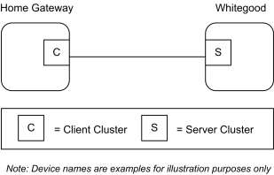
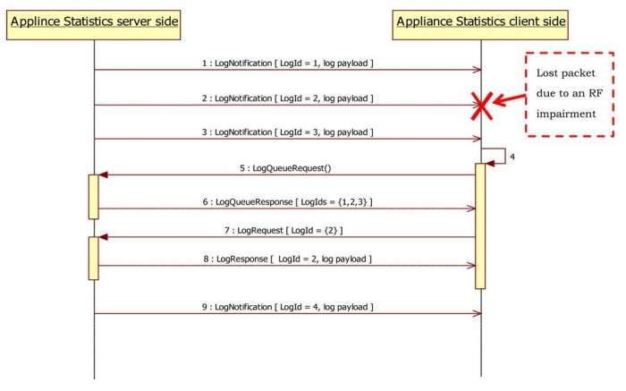
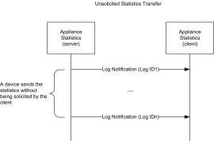
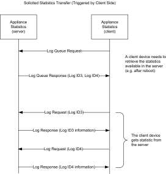
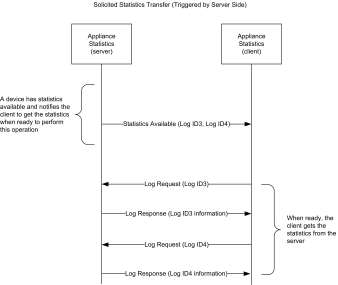

CHAPTER 15 APPLIANCE
The Cluster Library is made of individual chapters such as this one. See Document Control in the Cluster Library for a list of all chapters and documents. References between chapters are made using a X.Y notation where X is the chapter and Y is the sub-section within that chapter. References to external documents are contained in Chapter 1 and are made using [Rn] notation.
15.1 General Description ¶
15.1.1 Introduction ¶
The clusters specified in this chapter are for use typically in appliance management, but MAY be used in any application domain.
15.1.2 Cluster List ¶
This section lists the clusters specified in this chapter and gives examples of typical usage for the purpose of clarification.
The clusters specified in this chapter are listed in Table 10-1.
Table 15-1. Appliance Management Clusters ¶
| Id | Cluster Name | Description |
|---|---|---|
| 0x001b | EN50523 Appliance Control | Commands and attributes for controlling household appliances |
| 0x0b00 | EN50523 Appliance Identification | Commands and attributes for appliance information and device settings |
| 0x0b02 | EN50523 Appliance Events and Alerts | Commands and attributes for appliance events and alerts |
| 0x0b03 | EN50523 Appliance Statistics | Commands and attributes for appliance statistics |
15.2 EN50523 Appliance Control ¶
This section describes the EN50523 Appliance Control cluster.
15.2.1 Overview ¶
Please see section 2.2 for a general cluster overview defining cluster architecture, revision, classification, identification, etc
This cluster provides an interface to remotely control and to program household appliances. Example of control is Start, Stop and Pause commands.
The status “read” and “set” is compliant to the EN50523 “Signal State” and “Execute Command” functional blocks. Appliances parameters (e.g., Duration and Remaining Time) have been added, since they were missing from the original specs.
Figure 15-1. Typical Usage of the Appliance Control Cluster ¶

Note: Where a physical node supports multiple endpoints it will often be the case that many of these settings will apply to the whole node, that is, they are the same for every endpoint on the device. In such cases they can be implemented once for the node and mapped to each endpoint.
15.2.1.1 Revision History ¶
The global ClusterRevision attribute value SHALL be the highest revision number in the table below.
| Rev | Description |
|---|---|
| 1 | mandatory global ClusterRevision attribute added |
15.2.1.2 Classification ¶
| Hierarchy | Role | PICS Code | Primary Transaction |
|---|---|---|---|
| Base | Application | APLNC | Type 2 (server to client) |
15.2.1.3 Cluster Identifiers ¶
| Identifier | Name |
|---|---|
| 0x001b | EN50523 Appliance Control |
15.2.2 General Description ¶
15.2.2.1 Dependencies ¶
None
15.2.3 Server Attributes ¶
For convenience, the attributes defined in this specification are arranged into sets of related attributes; each set can contain up to 256 attributes. Attribute identifiers are encoded such that the most significant byte specifies the attribute set and the least significant byte specifies the attribute within the set. The currently defined attribute sets are listed in Table 15-2.
Table 15-2. Appliance Control Attribute Set ¶
| Attribute Set Identifier | Description |
|---|---|
| 0x00 | Appliance Functions |
15.2.3.1 Appliance Functions Attribute Set ¶
The Appliance Functions attribute set contains the attributes summarized in Table 15-3.
These attributes control the Appliance cycle parameters. Each of them, as described below, corresponds to an Appliance internal status configuration.
Table 15-3. Attributes of the Appliance Functions Attribute Set ¶
| Id | Name | Type | Range | Access | Default | M/O |
|---|---|---|---|---|---|---|
| 0x0000 | StartTime | uint16 | 0x0000 – 0xffff | RP | 0x0000 | M |
| 0x0001 | FinishTime | uint16 | 0x0000 – 0xffff | RP | 0x0000 | M |
| 0x0002 | RemainingTime | uint16 | 0x0000 – 0xffff | RP | 0x0000 | O |
15.2.3.2 StartTime Attribute ¶
StartTime attribute determines the time (either relative or absolute) of the start of the machine activity. Default format for Oven devices is absolute time. The default format for other appliances is relative time. Start- Time SHOULD be set less than FinishTime.
Table 15-4 provides details about time encoding which is used for StartTime attribute organization. ¶
Table 15-4. Time Encoding ¶
| Bit Range | Function | |
| 0..5 | Minutes ranging from 0 to 59 | |
| 6..7 | Time encoding | |
| Value | Enumeration | |
| 0x0 0x1 0x2..0x3 | RELATIVE ABSOLUTE Reserved | |
| 8..15 | Hours ranging from 0 to 255 if RELATIVE encoding is selected 0 to 23 if ABSOLUTE encoding is selected |
15.2.3.3 FinishTime Attribute ¶
FinishTime attribute determines the time (either relative or absolute) of the expected end of the machine activity. Default format for Oven is absolute time. The default format for other appliances is relative time. FinishTime SHOULD be set greater than StartTime.
FinishTime attribute exploits time encoding reported in Table 15-4.
15.2.3.4 RemainingTime Attribute ¶
RemainingTime attribute determines the time, in relative format, of the remaining time of the machine cycle. It represents the time remaining to complete the machine cycle and it is updated only during the RUNNING state of the Appliance. During the other states of the Appliance RemainingTime attribute is indicated as the not valid value “0”.
RemainingTime attribute exploits time encoding reported in Table 15-4.
15.2.4 Server Commands Received ¶
The command IDs for the Appliance Control cluster are listed in Table 15-5.
Table 15-5. Cluster-specific Commands Received by the Server ¶
| Command Identifier Field Value | Description | M/O |
|---|---|---|
| 0x00 | Execution of a Command | O |
| 0x01 | Signal State | M |
| 0x02 | Write Functions | O |
| 0x03 | Overload Pause Resume | O |
| 0x04 | Overload Pause | O |
| 0x05 | Overload Warning | O |
15.2.4.1 Execution of a Command ¶
This basic message is used to remotely control and to program household appliances. Examples of control are START, STOP and PAUSE.
15.2.4.1.1 Payload Format ¶
The Execution of a Command payload SHALL be formatted as illustrated in Figure 15-2.
Figure 15-2. Format of the Execution of a Command Payload ¶
| Octets | 1 |
|---|---|
| Data Type | enum8 |
| Field Name | Command Identification |
15.2.4.1.1.1 Payload Details ¶
The Command Identification field: the command identification is an 8-bits in length field identifying the command to be executed. The enumeration used for this field SHALL match Table 15-6.
Table 15-6. Command Identification Values ¶
| Enumeration | Value | Description |
|---|---|---|
| START | 0x01 | Start appliance cycle |
| STOP | 0x02 | Stop appliance cycle |
| PAUSE | 0x03 | Pause appliance cycle |
| START SUPERFREEZING | 0x04 | Start superfreezing cycle |
| STOP SUPERFREEZING | 0x05 | Stop superfreezing cycle |
| START SUPERCOOLING | 0x06 | Start supercooling cycle |
| STOP SUPERCOOLING | 0x07 | Stop supercooling cycle |
| DISABLE GAS | 0x08 | Disable gas |
| ENABLE GAS | 0x09 | Enable gas |
| Manufacturer Specific | 0x80..0xff | Manufacturer Specific |
15.2.4.1.2 Effects on Receipt ¶
On receipt of this command, the appliance SHALL execute the command given in the Command Identification field. The device application SHALL be informed of the imposed command (and potential personalized tasks could start, e.g., by means of a message to appliance Main Board controller).
After the command execution, the appliance SHALL generate a Signal State Notification with the new appliance state.
15.2.4.2 Signal State Command ¶
This basic message is used to retrieve Household Appliances status. This command does not have a payload.
15.2.4.2.1 Effects on Receipt ¶
On receipt of this command, the device SHALL generate a Signal State Response command.
15.2.4.3 Write Functions Command ¶
This basic message is used to set appliance functions, i.e., information regarding the execution of an appliance cycle. Condition parameters such as start time or finish time information could be provided through this command. A function is mirrored by the cluster attribute that represents its current state. See Effect on Receipt below to understand the difference between writing a function and writing an attribute value.
15.2.4.3.1 Payload Format ¶
The Write Functions command frame SHALL be formatted as illustrated in Format of the Write Functions Command Frame.
Figure 15-3. Format of the Write Functions Command Frame ¶
| Octets | Variable |
|---|---|
| Field Name | Write Functions record |
Write Functions record SHALL be formatted as illustrated in Figure 15-4.
Figure 15-4. Format of the Write Functions Record Field ¶
| Octets | 2 | 1 | Variable |
|---|---|---|---|
| Data Type | uint16 | enum8 | Variable |
| Field Name | Function identifier (i.e., attribute identifier) | Function data type | Function data |
15.2.4.3.2 Payload Details ¶
The Function identifier field: the Function Identifier is 16-bits in length and SHALL contain the identifier of the function that is to be written.
The Function data type field: the function data type field SHALL contain the data type identifier of the attribute that is to be written.
The Function data field: the function data field is variable in length and SHALL contain the actual value of the function that is to be written.
15.2.4.3.3 Effects on Receipt ¶
On receipt of this command, the appliance SHALL set the function given in the Function identifier field. The Function attribute is actually changed only when the appliance internal functions have been changed.
If attribute reporting is configured on some function attributes, an attribute reporting command is generated when the attribute, and therefore internal appliance function is actually modified. In case attribute reporting is not used, the correct execution of the Write Function command SHOULD be verified by using Read Attribute command to poll the written attribute.
15.2.4.4 Overload Pause Resume Command ¶
This command SHALL be used to resume the normal behavior of a household appliance being in pause mode after receiving a Overload Pause command.
15.2.4.4.1 Payload Format ¶
The Overload Pause Resume Command SHALL have no payload.
15.2.4.4.2 Effects on Receipt ¶
On receipt of this command, the appliance SHALL resume its operations.
15.2.4.5 Overload Pause Command ¶
This command SHALL be used to pause the household appliance as a consequence of an imminent overload event.
15.2.4.5.1 Payload Format ¶
The Overload Pause Command SHALL have no payload.
15.2.4.5.2 Effects on Receipt ¶
On receipt of this command, the appliance SHALL pause its operations. In order to resume the normal operation an Overload Pause Resume command SHOULD be issued by the device supporting the client side of the Appliance control cluster.
15.2.4.6 Overload Warning Command ¶
This basic message is used to send warnings the household appliance as a consequence of a possible overload event, or the notification of the end of the warning state.
15.2.4.6.1 Payload Format ¶
The Overload Warning Command payload SHALL be formatted as illustrated in Figure 15-5.
Figure 15-5. Format of the Overload Warning Payload ¶
| Octets | 2 |
|---|---|
| Data Type | enum8 |
| Field Name | Warning Event |
15.2.4.6.2 Payload Details ¶
The Warning Event field represents the identifier of the events that needs to be communicated to the devices to alert about possible overload, as shown in Table 15-7.
Table 15-7. Format of the Event ID Enumerator ¶
| Event ID | Description |
|---|---|
| 0x00 | Warning 1: overall power above “available power” level |
| 0x01 | Warning 2: overall power above “power threshold” level |
| 0x02 | Warning 3: overall power back below the “available power” level |
| 0x03 | Warning 4: overall power back below the “power threshold” level |
| 0x04 | Warning 5: overall power will be potentially above “available power” level if the appliance starts |
15.2.4.6.3 Effects on Receipt ¶
On receipt of this command, the appliance SHALL show the possible warning state on a display (e.g., showing an icon with possible overload condition when activating the appliance in case of Warnings 1-2) or resume the normal state in case of events showing the return on normal state (e.g., Warning 3-4).
15.2.5 Server Commands Generated ¶
Table 15-8 lists commands that are generated by the server. ¶
Table 15-8. Cluster-specific Commands Sent by the Server ¶
| Command Identifier Field Value | Description | M/O |
|---|---|---|
| 0x00 | Signal State Response | M |
| 0x01 | Signal State Notification | M |
15.2.5.1 Signal State Response Command ¶
This command SHALL be used to return household appliance status, according to Appliance Status Values and Remote Enable Flags Values.
15.2.5.1.1 Payload Format ¶
The Signal State Response Command payload SHALL be formatted as illustrated in Figure 15-6.
The Appliance Status field: the data field is an 8 bits in length enumerator identifying the appliance status. The enumeration used for this field SHALL match the specifications in Table 15-9.
The Remote Enable Flags and Device Status 2 field: the data field is an 8 bits in length unsigned integer defining remote enable flags and potential appliance status 2 format. The unsigned integer used for this field SHALL match the specifications in Table 15-10.
The Appliance Status 2 field: the command identification is a 24 bits in length unsigned integer representing potential non-standardized or proprietary data.
Figure 15-6. Format of the Signal State Response Command Payload ¶
| Octets | 1 | 1 | 0/3 |
|---|---|---|---|
| Data Type | enum8 | uint8 | uint24 |
| Field Name | Appliance Status | Remote Enable Flags and Device Status 2 | Appliance Status 2 |
15.2.5.1.1.1 Payload Details ¶
ApplianceStatus
ApplianceStatus represents the current status of household appliance. ApplianceStatus must be included as part of the minimum data set to be provided by the household appliance device. ApplianceStatus is updated continuously as appliance state changes.
Table 15-9 provides states defined. ¶
Table 15-9. Appliance Status Values ¶
| Enumeration | Value | Description |
|---|---|---|
| OFF | 0x01 | Appliance in off state |
| STAND-BY | 0x02 | Appliance in stand-by |
| PROGRAMMED | 0x03 | Appliance already programmed |
| PROGRAMMED WAITING TO START | 0x04 | Appliance already programmed and ready to start (e.g., has not reached StartTime) |
| RUNNING | 0x05 | Appliance is running |
| PAUSE | 0x06 | Appliance is in pause |
| END PROGRAMMED | 0x07 | Appliance end programmed tasks |
| FAILURE | 0x08 | Appliance is in a failure state |
| PROGRAMME INTERRUPTED | 0x09 | The appliance programmed tasks have been interrupted |
| IDLE | 0x0a | Appliance in idle state |
| RINSE HOLD | 0x0b | Appliance rinse hold |
| SERVICE | 0x0c | Appliance in service state |
| SUPERFREEZING | 0x0d | Appliance in superfreezing state |
| SUPERCOOLING | 0x0e | Appliance in supercooling state |
| SUPERHEATING | 0x0f | Appliance in superheating state |
| Manufacturer Specific | 0x80..0xff | Manufacturer specific value range |
RemoteEnableFlags Field
RemoteEnableFlags represents the current status of household appliance correlated with remote control.
RemoteEnableFlags is mandatory and must be included as part of the minimum data set to be provided by the household appliance device.
RemoteEnableFlags is updated continuously when appliance state remote-controllability changes.
Table 15-10 provides details about flags organization. ¶
Table 15-10. Remote Enable Flags Values ¶
| Bit Range | Function |
|---|---|
| 0..3 | Remote Enable Flags |
| Bit Range | Function | |
| Value | Enumeration | |
| 0x0 0x7 0xf 0x1. 0x2..0x06, 0x8..0xe | DISABLED TEMPORARILY LOCKED/DISABLED ENABLED REMOTE CONTROL ENABLED REMOTE AND ENERGY CONTROL Reserved | |
| 4..7 | Device Status 2 Structure | |
| Value | Enumeration | |
| 0x0 0x1 0x2 0x3..0xf | PROPRIETARY PROPRIETARY IRIS SYMPTOM CODE Reserved |
ApplianceStatus2 Field
ApplianceStatus2 represents a detailed definition of Appliance state. If optionally provided, ApplianceStatus2 is updated continuously as appliance state change.
This field contains non-standardized or proprietary data. In the case of IRIS Symptom Code, 3 bytes representing the 3 digit encoding is provided (possibly complemented with proprietary bytes).
15.2.5.1.2 Effect on Receipt ¶
On receipt of this command, the device is informed of a Household Appliance status.
15.2.5.2 Signal State Notification Command ¶
This command SHALL be used to return household appliance status, automatically when appliance status changes.
15.2.5.2.1 Payload Format ¶
The Signal State Notification Command payload SHALL be formatted as illustrated for the Signal State Response Command Payload.
15.2.5.2.2 Effects on Receipt ¶
On receipt of this command, the device is informed of a Household Appliance status.
15.2.6 Client ¶
The client cluster has no dependencies or specific cluster attributes. The client side of this cluster receives the cluster specific commands generated by the server. The client side of this cluster generates the cluster specific commands received by the server as required by the application.
15.3 EN50523 Appliance Identification ¶
15.3.1 Overview ¶
Please see section 2.2 for a general cluster overview defining cluster architecture, revision, classification, identification, etc.
Attributes and commands for determining basic information about a device and setting user device information.
The Appliance Identification Cluster is a transposition of EN50523 “Identify Product” functional block.
Note: Where a physical node supports multiple endpoints it will often be the case that many of these settings will apply to the whole node, that is they are the same for every endpoint on the device. In such cases they can be implemented once for the node, and mapped to each endpoint.
15.3.1.1 Revision History ¶
The global ClusterRevision attribute value SHALL be the highest revision number in the table below.
| Rev | Description |
|---|---|
| 1 | mandatory global ClusterRevision attribute added; CCB 1893 |
15.3.1.2 Classification ¶
| Hierarchy | Role | PICS Code | Primary Transaction |
|---|---|---|---|
| Base | Application | APLNCID | Type 2 (server to client) |
15.3.1.3 Cluster Identifiers ¶
| Identifier | Name |
|---|---|
| 0x0b00 | EN50523 Appliance Identification |
15.3.2 Server ¶
15.3.2.1 Attributes ¶
For convenience, the attributes defined in this specification are arranged into sets of related attributes; each set can contain up to 16 attributes. Attribute identifiers are encoded such that the most significant three nibbles specify the attribute set and the least significant nibble specifies the attribute within the set. The currently defined attribute sets are listed in Table 15-11.
Table 15-11. Appliance Identification Attribute Sets ¶
| Attribute Set Identifier | Description |
|---|---|
| 0x000 | Basic Appliance Identification |
| 0x001 | Extended Appliance Identification |
15.3.2.2 Basic Appliance Identification Attribute Set ¶
The Basic Appliance Identification attribute set contains the attributes summarized in Table 15-12.
Table 15-12. Attributes of the Appliance Identification Attribute Set ¶
| Identi- fier | Name | Type | Range | Access | Def | M/O |
|---|---|---|---|---|---|---|
| 0x0000 | BasicIdentification | uint56 | - | R | - | M |
15.3.2.3 BasicIdentification Attribute ¶
BasicIdentification is 56-bit bitmap (7 octets) and contains the basic appliance identification.
BasicIdentification is mandatory and must be included as part of the minimum data set to be provided by the household appliance device.
Table 15-13 provides attribute content specification. ¶
Table 15-13. Basic Appliance Identification Content Specification ¶
| Attribute Name | Field | Bits |
|---|---|---|
| BasicIdentification | Company ID | 0x00-0x0f |
| Brand ID | 0x10-0x1f | |
| Product Type ID | 0x20-0x2f | |
| Spec. Ver. | 0x37-0x30 |
Table 15-13 provides Company ID and Brand ID fields content, according to [N2], Table 5. ¶
Table 15-14 provides Product Type IDs field content, again according to [N2] (see Table 6). ¶
Table 15-14. Product Type IDs ¶
| Device (Appliance) | Product Type ID |
|---|---|
| White Goods | 0x0000 |
| Dishwasher | 0x5601 |
| Device (Appliance) | Product Type ID |
|---|---|
| Tumble Dryer | 0x5602 |
| Washer Dryer | 0x5603 |
| Washing Machine | 0x5604 |
| Hobs | 0x5E03 |
| Induction Hobs | 0x5E09 |
| Oven | 0x5E01 |
| Electrical Oven | 0x5E06 |
| Refrigerator Freezer | 0x6601 |
15.3.2.4 Extended Appliance Identification Attribute Set ¶
The Extended Appliance Identification attribute set contains the attributes summarized in Table 15-15.
Table 15-15. Attributes of the Extended Appliance Identification Attribute Set ¶
| Identifier | Name | Type | Range | Acc | De f | M/O |
|---|---|---|---|---|---|---|
| 0x0010 | CompanyName | string | 0 to 16 Octets | R | - | O |
| 0x0011 | CompanyId | uint16 | all | R | - | O |
| 0x0012 | BrandName | string | 0 to 16 Octets | R | - | O |
| 0x0013 | BrandId | uint16 | all | R | - | O |
| 0x0014 | Model | octstr | 0 to 16 Octets | R | - | O |
| 0x0015 | PartNumber | octstr | 0 to 16 Octets | R | - | O |
| 0x0016 | ProductRevision | octstr | 0 to 6 Octets | R | - | O |
| 0x0017 | SoftwareRevision | octstr | 0 to 6 Octets | R | - | O |
| 0x0018 | ProductTypeName | octstr | 2 Octets | R | - | O |
| 0x0019 | ProductTypeId | uint16 | all | R | - | O |
| 0x001A | CECEDSpecificationVersion | uint8 | all | R | - | O |
15.3.2.5 CompanyName Attribute ¶
CompanyName is a ZCL Character String field capable of storing up to 16 character string (the first Octet indicates length) encoded in the UTF-8 format. Example Company Name labels are “Electrolux”, “Indesit Company”, “Candy”. The complete list of valid labels is defined in [E2], Table 7.
15.3.2.6 CompanyID Attribute ¶
CompanyID is 16-bit in length unsigned integer which defines the appliance company identifier. The complete list of valid company identifiers is defined in [E2], Table 7.
15.3.2.7 BrandName Attribute ¶
BrandName is a ZCL Character String field capable of storing up to 16 character string (the first Octet indicates length) encoded in the UTF-8 format. Example Brand Name labels are “Rex”, “Ariston”, “Hoover”. The complete list of valid labels is defined in [E2], Table 7.
15.3.2.8 BrandID Attribute ¶
BrandID is 16-bit in length unsigned integer which defines the appliance brand identifier. The complete list of valid brand identifiers is defined in [E2], Table 7.
Note that Brand Ids and Company Ids are independently defined. The advantage is that one brand of one producer MAY have the same ID as a brand name of another producer.
15.3.2.9 Model Attribute ¶
Model is a ZCL Octet String field capable of storing up to 16 character string (the first Octet indicates length) encoded in the UTF-8 format. Model defines the appliance model name, decided by manufacturer.
15.3.2.10 PartNumber Attribute ¶
PartNumber is a ZCL Octet String field capable of storing up to 16 character string (the first Octet indicates length) encoded in the UTF-8 format. PartNumber defines the appliance part number, decided by manufacturer.
15.3.2.11 ProductRevision Attribute ¶
ProductRevision is a ZCL Octet String field capable of storing up to 6 character string (the first Octet indicates length) encoded in the UTF-8 format. ProductRevision defines the appliance revision code, decided by manufacturer.
15.3.2.12 SoftwareRevision Attribute ¶
SoftwareRevision is a ZCL Octet String field capable of storing up to 6 character string (the first Octet indicates length) encoded in the UTF-8 format. SoftwareRevision defines the appliance software revision code, decided by manufacturer.
15.3.2.13 ProductTypeName Attribute ¶
ProductTypeName is a 2 Octet in length String field which defines the appliance type label. Example ProductTypeName labels are “WM”, “RE”, “GO”, respectively for Washing Machine, Refrigerator and Gas Oven. The complete list of valid labels is defined in [E2], Table 8.
15.3.2.14 ProductTypeID Attribute ¶
ProductTypeID is a 16-bit in length unsigned integer which defines the appliance type identifier. The structure and complete list of valid ProductTypeIDs is defined in [E2], Table 7.
15.3.2.15 CECEDSpecificationVersion Attribute ¶
CECEDSpecificationVersion is an 8-bit in length unsigned integer which defines the CECED reference documentation. Compliance and certification of appliance communication capabilities can be defined according to Table 15-16 (see [E2], Table 10).
Table 15-16. CECED Specification Version ¶
| Specification Version | Value |
|---|---|
| Compliant with v1.0, not certified | 0x10 |
| Compliant with v1.0, certified | 0x1A |
| Compliant with vX.0, not certified | 0xX0 |
| Compliant with vX.0, certified | 0xXA |
15.3.2.16 Commands Received ¶
No cluster-specific commands are received by the server.
15.3.2.17 Commands Generated ¶
No cluster-specific commands are generated by the server.
15.3.3 Client ¶
The client cluster has no dependencies or cluster specific attributes. The client cluster has no cluster specific commands generated or received.
15.4 EN50523 Appliance Events and Alerts ¶
15.4.1 Overview ¶
Please see Chapter 2 for a general cluster overview defining cluster architecture, revision, classification, identification, etc.
Attributes and commands for transmitting or notifying the occurrence of an event, such as “temperature reached” and of an alert such as alarm, fault or warning.
It is based on the “Signal event” syntax of EN50523 and completed where necessary.
Figure 15-7. Typical Usage of the Appliance Events and Alerts Cluster ¶

There are two different types of occurrences: events and alerts.
Each event is described through two fields:
- An event header
- An event identification value;
The server notifies the client about the event occurred. There is no possibility for the client to get the event from the server and to have a response.
Each alert is described through three fields:
- An alert identification value;
- A category: either WARNING, DANGER, or FAILURE.
- A presence/recovery flag, either the alert has been detected or the alert has been recovered.
The server notifies the client regarding the alerts occurred. The client can also request the alerts from the server and receive the related response.
15.4.1.1 Revision History ¶
The global ClusterRevision attribute value SHALL be the highest revision number in the table below.
| Rev | Description |
|---|---|
| 1 | mandatory global ClusterRevision attribute added |
15.4.1.2 Classification ¶
| Hierarchy | Role | PICS Code | Primary Transaction |
|---|---|---|---|
| Base | Application | APPLEV | Type 2 (server to client) |
15.4.1.3 Cluster Identifiers ¶
| Identifier | Name |
|---|---|
| 0x0b002 | EN50523 Appliance Events and Alerts |
15.4.2 Server ¶
15.4.2.1 Dependencies ¶
None
15.4.2.2 Attributes ¶
None
15.4.2.3 Commands Received ¶
The received command IDs for the Appliance Events and Alerts Cluster are listed in Table 15-17.
Table 15-17. Received Commands IDs for the Events and Alerts Cluster ¶
| Command Identifier Field Value | Description | M/O |
|---|---|---|
| 0x00 | Get Alerts | M |
15.4.2.3.1 Get Alerts Command ¶
This basic message is used to retrieve Household Appliance current alerts.
15.4.2.3.1.1 Payload Format ¶
This command does not have a payload.
15.4.2.3.1.2 Effects on Receipt ¶
On receipt of this command, the device SHALL generate a Get Alerts Response command.
15.4.2.4 Commands Generated ¶
The generated command IDs for the Appliance Events and Alerts Cluster are listed in Table 15-18.
Table 15-18. Generated Commands IDs for the Appliance Events and Alerts Cluster ¶
| Command Identifier Field Value | Description | M/O |
|---|---|---|
| 0x00 | Get Alerts Response | M |
| 0x01 | Alerts Notification | M |
| 0x02 | Event Notification | M |
15.4.2.4.1 Get Alerts Response Command ¶
This message is used to return household appliance current alerts.
15.4.2.4.1.1 Payload Format ¶
The payload SHALL be formatted as illustrated in Figure 15-8.
Figure 15-8. Format of the Get Alerts Response Command Payload ¶
| Octets | 1 | 3 | ... | 3 |
|---|---|---|---|---|
| Data Type | uint8 | uint24 | ... | uint24 |
| Field Name | Alerts Count245 | Alert structure 1 | ... | Alert structure n |
15.4.2.4.1.1.1 Payload Details ¶
The Alerts Count field: the data field is an 8 bits in length unsigned integer, containing the following alerts structures count and alert structure type.
Table 15-19 provides details about Alerts Count and Structure field organization. ¶
Table 15-19. Alert Count Organization ¶
| Bit range | Function | |
| 0..3 | Number of Alerts n | |
| 4..7 | Type of alert | |
| Value | Enumeration | |
| 0x0 0x1..0xf | UNSTRUCTURED Reserved |
245 Even if the ApplianceAlertList array number of element field is 16-bit in length, the actual content is limited to 0x000n, where, in actual implementations, n is lower than 255 (except for the invalid condition, 0xffff). Then, the notification of the Alert count is mapped to a single byte (following appliance interworking specifications).
Each Alerts Structure field SHALL be formatted as illustrated in Table 15-20.
Table 15-20. Alerts Structure Organization ¶
| Bit range | Function | |
| 0..7 | Alert id | |
| 8..11 | Category | |
| Value | Enumeration | |
| 0x0 0x1 0x2 0x3 0x4 – 0xf | Reserved WARNING DANGER FAILURE Reserved | |
| 12..13 | Presence recovery | |
| Value | Enumeration | |
| 0x0 0x1 0x2 – 0x3 | RECOVERY PRESENCE Reserved | |
| 16..23 | Manufacturer specific bits |
The Alert ID field can have the following values:
- Value 0 is reserved.
- Values ranging from 1 to 63 are standardized.
- Values ranging from 64 to 127 are reserved.
- Values ranging from 128 to 255 are manufacturer specific.
15.4.2.4.1.2 Effects on Receipt ¶
On receipt of this command, the device is informed of a Household Appliance warning and fault occurrence.
15.4.2.4.2 Alerts Notification Command ¶
This message is used to notify the current modification of warning and/or fault conditions.
15.4.2.4.2.1 Payload Format ¶
The payload SHALL be formatted as illustrated in Figure 15-9.
Figure 15-9. Format of the Alerts Notification Command Payload ¶
| Octets | 1 | 3 | ... | 3 |
|---|---|---|---|---|
| Data Type | uint8 | uint24 | ... | uint24 |
| Field Name | Alerts Count | Alert structure 1 | ... | Alert structure n |
15.4.2.4.2.1.1 Payload Details ¶
See Get Alert Response command.
15.4.2.4.2.2 Effects on Receipt ¶
On receipt of this command, the device is informed of a Household Appliance warning and fault occurrence.
15.4.2.4.3 Event Notification Command ¶
This message is used to notify an event occurred during the normal working of the appliance.
15.4.2.4.3.1 Payload Format ¶
The payload SHALL be formatted as illustrated in Figure 15-10.
Figure 15-10. Format of the Event Notification Command Payload ¶
| Octets | 1 | 1 |
|---|---|---|
| Data Type | uint8 | uint8 |
| Field Name | Event Header | Event Identification |
15.4.2.4.3.1.1 Payload Details ¶
The Event Header is a reserved field set to 0.
The Event Identification field: the Event Identification is an 8-bits in length field identifying the event to be notified. The codes used for this field SHALL match those shown in Table 15-21:
Table 15-21. Event Identification ¶
| Event Identification | Value | Description |
|---|---|---|
| END OF CYCLE | 0x01 | End of the working cycle reached |
| TEMPERATURE REACHED | 0x04 | Set Temperature Reached |
| END OF COOKING | 0x05 | End of cooking process |
| SWITCHING OFF | 0x06 | |
| Manufacturer Specific | 0x40-0xf6 | Manufacturer specific Id range |
| WRONG DATA | 0xf7 | |
| Manufacturer Specific | 0xf8-0xff | Manufacturer specific Id range |
15.4.2.4.3.2 Effects on Receipt ¶
On receipt of this command, the device is informed of a Household Appliance working event occurrence.
15.4.3 Client ¶
The client cluster has no dependencies or specific cluster attributes. The client side of this cluster receives the cluster specific commands generated by the server. The client side of this cluster generates the cluster specific commands received by the server as required by the application.
15.5 Appliance Statistics ¶
15.5.1 Overview ¶
This cluster provides a mechanism for the transmitting appliance statistics to a collection unit (gateway). The statistics can be in format of data logs. In case of statistic information that will not fit the single payload, the Partition cluster SHOULD be used.
Each appliance uses persistent memory to temporarily store collected statistic logs (entries). The maximum number of stored statistic logs is appliance dependent. If some log notification packets are lost due to temporary unreliable RF communication, sequential Log IDs allow the collection of the missing logs. The following is a simple example of an application-level policy used for log collection. When receiving logs with non-consecutive Log IDs, the client can ask server side for the available log queue to verify the actual availability of the missing log. If present, the log can be explicitly retrieved using the LogRequest command.

15.5.1.1 Revision History ¶
The global ClusterRevision attribute value SHALL be the highest revision number in the table below.
| Rev | Description |
|---|---|
| 1 | mandatory global ClusterRevision attribute added;CCB 1893 |
15.5.1.2 Classification ¶
| Hierarchy | Role | PICS Code | Primary Transaction |
|---|---|---|---|
| Base | Application | APPLST | Type 2 (server to client) |
15.5.1.3 Cluster Identifiers ¶
| Identi- fier | Name |
|---|---|
| 0x0b003 | EN50523 Appliance Statistics |
15.5.2 Server ¶
15.5.2.1 Attributes ¶
The server side of this cluster contains the attributes the statistics and log information shown in Table 15-22.
Table 15-22. Server Attributes ¶
| Identi- fier | Description | Type | Access | Default | M/O |
|---|---|---|---|---|---|
| 0x0000 | LogMaxSize | uint32 | R | 0x0000003C | M |
| 0x0001 | LogQueueMax- Size | uint8 | R | 0x01 | M |
15.5.2.1.1 LogMaxSize Attribute ¶
The LogMaxSize attribute describes the maximum size of a log payload that can be transferred using the Log Notification and Log Response commands. In case the LogMaxSize attribute is greater than 70 bytes (0x46) the Appliance Statistics commands SHOULD be transferred using the partition cluster. This is the case of a “bulk log” transferred from a server side (e.g., White Goods) to a client side (e.g., home gateway) of the Appliance Statistics Cluster.
15.5.2.1.2 LogQueueMaxSize Attribute ¶
The LogQueueMaxSize attribute describes the maximum number of logs that are available in the server side of the Appliance Statistics cluster. The logs MAY be retrieved by the client using the Log Request command.
15.5.2.2 Commands ¶
The generated command IDs for the Appliance Statistics Server are listed in Table 15-23.
Table 15-23. Commands Generated by the Appliance Statistics Server ¶
| Command ID | Description | M/O |
|---|---|---|
| 0x00 | Log Notification | M |
| 0x01 | Log Response | M |
| 0x02 | Log Queue Response | M |
| 0x03 | Statistics Available | M |
15.5.2.2.1 Log Notification ¶
The Appliance Statistics Cluster server occasionally sends out a Log Notification command to the devices to which it needs to log information related to statistics (e.g., home gateways) which implement the client side of Appliance Statistics Cluster.
15.5.2.2.1.1 Payload Format ¶
Figure 15-11. Format of the Log Notification Payload ¶
| Octets | 4 | 4 | 4 | 1 | … | 1 |
|---|---|---|---|---|---|---|
| Data Type | UTC | uint32 | uint32 | data8 | data8 | data8 |
| Field Name | Time Stamp | Log ID | Log Length | Log Payload |
15.5.2.2.1.2 When Generated ¶
The Log Notification command is generated when the appliance needs to send log information related to its statistics to a remote device (e.g., home gateway) without being solicited by the client side. The log information sent with the Log Notification command from the server side is not solicited by specific command generated by the client side of the Appliance Statistics cluster. The Log ID field identifies uniquely the log information contained in the log payload. Log IDs SHALL be consecutive. Log Length field indicated the length in bytes of the log payload and SHALL be less than LogMaxSize attribute.
If the device generating the Log Notification command is not able to generate the time stamp information it SHALL insert an invalid UTC Time (0xffffffff). In this case the server side of the Appliance statistics cluster (e.g., a home gateway) SHOULD insert a timestamp of the received log notification if available before storing or transmitting the log information to backend systems.
15.5.2.2.1.3 Effect Upon Receipt ¶
Upon receipt of the Log Notification command, the Appliance statistics client will respond with a Default Response command if requested or if an error occurs. In case of error the server side of Appliance statistics cluster MAY store the information in the queue and notify the client that there are statistics available by using the Statistic Available command.
15.5.2.2.2 Log Response ¶
The Appliance Statistics Cluster server sends out a Log Response command to respond to a Log Request command generated by the client side of the Appliance Statistics cluster.
15.5.2.2.2.1 Payload Format ¶
The payload of the Log Response command is the same as the Log Notification command.
15.5.2.2.2.2 When Generated ¶
The Log Response command is generated to respond to Log Request sent from a device supporting the client side of the Appliance Statistics cluster (e.g., home gateway).
15.5.2.2.2.3 Effect Upon Receipt ¶
Upon receipt of the Log Response command, the Appliance statistics client will respond with a Default Response command if requested or if an error occurs.
15.5.2.2.3 Log Queue Response ¶
The Log Queue Response command is generated as a response to a Log Queue Request command in order to notify the client side of the Appliance statistics cluster about the logs stored in the server side (queue) that can be retrieved by the client side of this cluster through a Log Request command. Please note that the LogQueueSize field SHALL be less than the LogQueueMaxSize attribute.
15.5.2.2.3.1 Payload Format ¶
Figure 15-12. Format of the Log Queue Response Payload ¶
| Octets | 1 | 4 | 4 | 4 |
|---|---|---|---|---|
| Data Type | uint8 | uint32 | … | uint32 |
| Field Name | Log Queue Size | Log ID | … | Log ID |
15.5.2.2.3.2 When Generated ¶
The Log Queue Response command is generated in response to a Log Queue Request sent from a device supporting the client side of the Appliance Statistics cluster (e.g., home gateway) Please note that if Log Queue Size is equal to zero (not logs in the queue), the packet SHALL not carry Log IDs.
15.5.2.2.3.3 Effect Upon Receipt ¶
Upon receipt of the Log Queue Response command, the Appliance statistics client will respond with a Default Response command if requested or if an error occurs. The client side of the appliance statistics willing to get the logs in the queue SHALL then use only the Log IDs that have been indicated in the Log Queue Response.
15.5.2.2.4 Statistics Available ¶
The Appliance Statistics Cluster server sends out a Statistic Available command to notify the client side of the Appliance Statistics cluster that there are statistics that can be retrieved by using the Log Request command.
15.5.2.2.4.1 Payload Format ¶
The Statistic Available command is the same as the Log Queue Response command. The Log IDs that can be retrieved by the client are indicated in the payload.
15.5.2.2.4.2 When Generated ¶
The Statistic Available command is generated to notify a device supporting the client side of the Appliance Statistics cluster (e.g., home gateway) to get the statistics information from the log queue as soon as available to perform this operation.
15.5.2.2.4.3 Effect Upon Receipt ¶
Upon receipt of the Statistic Available command, the client side of the Appliance Statistics cluster is notified on the availability of statistics in the server side that can be retrieved by using Log Request commands.
The Appliance statistics client will respond with a Default Response command if requested or if an error occurs.
15.5.3 Client ¶
15.5.3.1 Attributes ¶
There are no attributes on the client side of the Appliance Statistics Cluster.
15.5.3.2 Commands ¶
The generated command IDs for the Appliance Statistics Client are listed in Table 15-24.
Table 15-24. Commands Generated by the Appliance Statistics Client ¶
| Command ID | Description | M/O |
|---|---|---|
| 0x00 | Log Request | M |
| 0x01 | Log Queue Request | M |
15.5.3.2.1 Log Request ¶
The Log Request command is send from a device supporting the client side of the Appliance Statistics cluster (e.g., Home Gateway) to retrieve the log from the device supporting the server side (e.g., appliance).
15.5.3.2.1.1 Payload Format ¶
Figure 15-13. Format of the Log Request Payload ¶
| Octets | 4 |
|---|---|
| Data Type | uint32 |
| Field Name | Log ID |
15.5.3.2.1.2 When Generated ¶
The Log Request command is generated to retrieve a log information from a device supporting the server side of the Appliance Statistics cluster (e.g., appliance). The log information is addressed by referencing it with the Log ID field. In order to get the Log ID that can be retrieved with the Log Request command, the Log Queue Request command MAY be used.
15.5.3.2.1.3 Effect Upon Receipt ¶
Upon receipt of the Log Request command, the Appliance statistics server will respond with a Log Response command if the log is available or with a Default Response if an error occurs. In case the Log ID is not available in the server side of the cluster the status code carried by the Default Response SHALL be “NOT_FOUND.”
15.5.3.2.2 Log Queue Request ¶
The Log Queue Request command is sent from a device supporting the client side of the Appliance Statistics cluster (e.g., Home Gateway) to retrieve the information about the logs inserted in the queue, from the device supporting the server side (e.g., appliance).
15.5.3.2.2.1 Payload Format ¶
The Log Queue Request command has no payload.
15.5.4 Appliance Statistics Cluster Sequence Diagram ¶
Figure 15-14 shows a typical sequence interaction between the client and server sides of the Appliance Sta- ¶
tistics Cluster.
Figure 15-14. Appliance Statistics Cluster Sequence Diagram ¶


